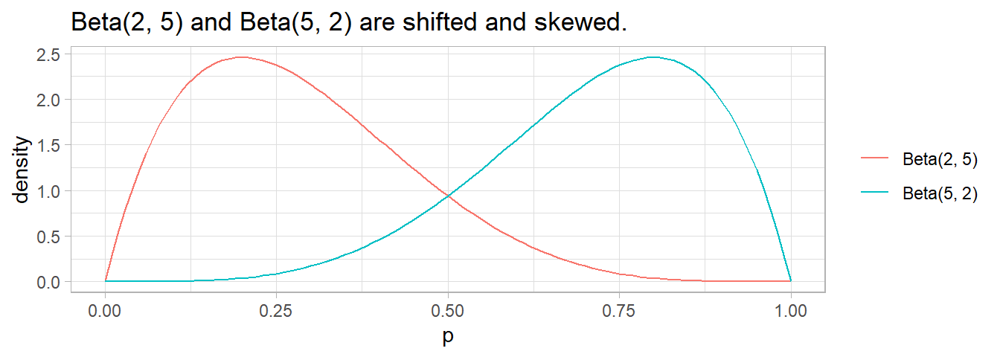
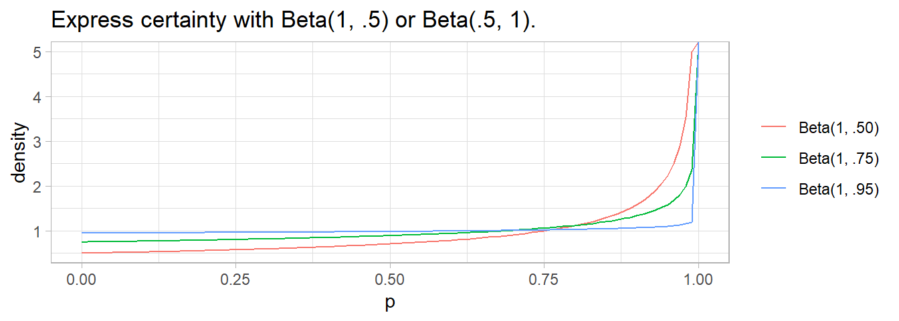
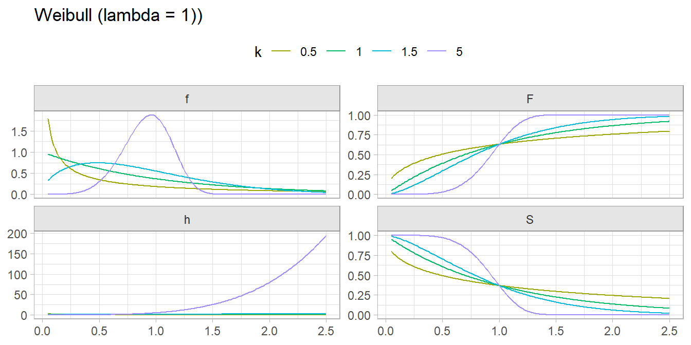

Chapter 2 Random Variables and Distributions
Consider two random variables, \(x\) and \(y\), with corresponding probability density functions (PDF), $f(x) and $f(y). Two properties apply to a PDF: \(f(x) \ge 0\) for all \(x\), and \(\int_{-\infty}^{\infty} f(x) dx = 1\). Also,
- The cumulative density function (CDF) is \(F(x) = \int_{-\infty}^{\infty} f(x) dx\).
- The joint distribution of \(x\) and \(y\) is \(f(x, y) = f(x|y)f(y) = f(y|x)f(x)\) where \(f(x|y)\) is called the conditional PDF.
- The marginal PDF is \(f(x) = \int_{-\infty}^{\infty} f(x, y) dy\).
- The chain rule: \(f(x_1, x_2, x_3, \ldots, x_k) = f(x_1| x_2, x_3, \ldots, x_k) f(x_2 | x_3, \ldots, x_k) \cdots f(x_k)\)
Given a distribution function \(f(x)\), its integral over the domain of \(x\) sums to 1, \(\int {f(x)} dx = 1\). The expected value of random variable \(X\) with distribution function \(f(x)\) is \(E[X] = \int x \cdot f(x) dx\). The variance of \(x\) is \(Var(X) = E[(X - E[X])^2] = \int x^2 \cdot f(x) dx\). Alternatively \(Var(X) = E[X^2] - E[X]^2\).
For example, suppose \(f(x) = cx^2\), \(x \in [0, 1]\). Then \(c = 3\) because \(\int_{x = 0}^1 cx^2 dx = 1\). The expected value of \(X\) is \(E[X] = \int_{x = 0}^1 x \cdot (3x^2) dx = \frac{3}{4}\). The variance of \(X\) is \(Var[X] = \int_{x = 0}^1 (x - \frac{3}{4})^2 \cdot (3x^2) dx\) which you can solve for \(\frac{144}{3840} = .0375\). Alternatively, \(Var[X] = \int_{x = 0}^1 x^2 \cdot (3x^2) dx - \left(\frac{3}{4}\right)^2\) which you can solve for \(\frac{3}{80} = .0375\)
2.1 Bernoulli
The Bernoulli distribution models a single experiment with a binomial outcome. The Bernoulli distribution is a special case of the binomial distribution where a single trial is conducted \((n = 1)\).
If \(X\) is the result of a trial with two outcomes of probability \(P(X = 1) = \pi\) and \(P(X = 0) = 1 - \pi\), then \(X\) is a random variable with a Bernoulli distribution \(X \sim \mathrm{Bernoulli}(\pi)\)
\[f(X = x) = \pi^x (1 - \pi)^{1 - x}, \hspace{1cm} x \in (0, 1)\]
with \(E(X) = \pi\) and \(Var(X) = \pi(1 - \pi)\).
2.2 Binomial
Binomial sampling is used to model counts of one level of a categorical variable over a fixed sample size.
If \(X\) is the count of successful events in \(n\) identical and independent Bernoulli trials of success probability \(\pi\), then \(X\) is a random variable with a binomial distribution \(X \sim \mathrm{Bin}(n,\pi)\)
\[f(X = k;n, \pi) = \frac{n!}{k!(n-k)!} \pi^k (1-\pi)^{n-k} \hspace{1cm} k \in (0, 1, ..., n), \hspace{2mm} \pi \in [0, 1]\]
with \(E(X)=n\pi\) and \(Var(X) = n\pi(1-\pi)\).
Consider a data set dat_bin containing frequencies of high-risk drinkers vs non-high-risk drinkers in a college survey.
dat_bin <- data.frame(
subject = 1:1315,
high_risk = factor(c(rep("Yes", 630), rep("No", 685)))
)
janitor::tabyl(dat_bin$high_risk)## dat_bin$high_risk n percent
## No 685 0.5209125
## Yes 630 0.4790875The MLE of \(\pi\) from the Binomial distribution is the sample mean.
## [1] 0.4790875data.frame(events = seq(550, 700, 10),
pmf = dbinom(seq(550, 700, 10), n, p),
cdf = pbinom(seq(550, 700, 10), n, p, lower.tail = TRUE)) %>%
ggplot() +
geom_col(aes(x = events, y = pmf)) +
geom_text(aes(x = events, label = round(pmf, 3), y = pmf + 0.001),
position = position_dodge(0.9), size = 3, vjust = 0) +
geom_line(aes(x = events, y = cdf/40), size = 1) +
scale_y_continuous(limits = c(0, .025),
sec.axis = sec_axis(~ . * 40, name = "Cum Prob")) +
labs(title = "PMF and CDF of Binomial Distribution",
subtitle = paste0("Bin(", n, ", ", scales::comma(p, accuracy = .01), ")"),
x = "X = k", y = "Density")## Warning: Using `size` aesthetic for lines was deprecated in ggplot2 3.4.0.
## ℹ Please use `linewidth` instead.
## This warning is displayed once every 8 hours.
## Call `lifecycle::last_lifecycle_warnings()` to see where this warning was generated.There are several ways to calculate a 95% CI for \(\pi\). One method is the normal approximation Wald interval.
\[\pi = p \pm z_{\alpha /2} \sqrt{\frac{p (1 - p)}{n}}\]
## [1] 0.4520868 0.5060882The Wald interval’s accuracy suffers when \(np<5\) or \(n(1-p)<5\) and it does not work at all when \(p = 0\) or \(p = 1\). Option two is the Wilson method.
\[\frac{p + \frac{z^2}{2n}}{1 + \frac{z^2}{n}} \pm \frac{z}{1 + \frac{z^2}{n}} \sqrt{\frac{p(1 - p)}{n} + \frac{z^2}{4n^2}}\]
est <- (p + (z^2)/(2*n)) / (1 + (z^2) / n)
pm <- z / (1 + (z^2)/n) * sqrt(p*(1-p)/n + (z^2) / (4*(n^2)))
est + c(-pm, pm)## [1] 0.4521869 0.5061098This is what prop.test(correct = FALSE) calculates.
##
## 1-sample proportions test without continuity correction
##
## data: x out of n, null probability 0.5
## X-squared = 2.3004, df = 1, p-value = 0.1293
## alternative hypothesis: true p is not equal to 0.5
## 95 percent confidence interval:
## 0.4521869 0.5061098
## sample estimates:
## p
## 0.4790875There is a second version of the Wilson interval that applies a “continuity correction” that aligns the “minimum coverage probability”, rather than the “average probability”, with the nominal value.
##
## 1-sample proportions test with continuity correction
##
## data: x out of n, null probability 0.5
## X-squared = 2.2175, df = 1, p-value = 0.1365
## alternative hypothesis: true p is not equal to 0.5
## 95 percent confidence interval:
## 0.4518087 0.5064898
## sample estimates:
## p
## 0.4790875Finally, there is the Clopper-Pearson exact confidence interval. Clopper-Pearson inverts two single-tailed binomial tests at the desired alpha. This is a non-trivial calculation, so there is no easy formula to crank through. Just use the binom.test() function and pray no one asks for an explanation.
##
## Exact binomial test
##
## data: x and n
## number of successes = 630, number of trials = 1315, p-value = 0.1364
## alternative hypothesis: true probability of success is not equal to 0.5
## 95 percent confidence interval:
## 0.4517790 0.5064896
## sample estimates:
## probability of success
## 0.4790875The expected probability of no one being a high-risk drinker is \(f(0;0.479) = \frac{1315!}{0!(1315-0)!} 0.479^0 (1-0.479)^{1315-0} = 0\). Use dbinom() for probability densities.
The expected probability of at least half the population being a high-risk drinker, \(f(658, 0.479) = .065\). Use pbinom() for cumulative probabilities.
The normal distribution is a good approximation when \(n\) is large. The \(\lim_{n \rightarrow \infty} \mathrm{Bin}(n, \pi) = N(n\pi, n\pi(1−\pi)).\)
Suppose a second survey gets a slightly different result. The high risk = Yes falls from 630 (48%) to 600 (46%).
dat_bin2 <- data.frame(
subject = 1:1315,
high_risk = factor(c(rep("Yes", 600), rep("No", 715)))
)
(dat2_tabyl <- janitor::tabyl(dat_bin2, high_risk))## high_risk n percent
## No 715 0.5437262
## Yes 600 0.4562738The two survey counts of high risk = “Yes” are independent random variables distributed \(X \sim \mathrm{Bin}(1315, .48)\) and \(Y \sim \mathrm{Bin}(1315, .46)\). What is the probability that either variable is \(X \ge 650\)?
Let \(P(A) = P(X \le 650)\) and \(P(B) = P(Y \le 650)\). Then \(P(A|B) = P(A) + P(B) - P(AB)\), and because the events are independent, \(P(AB) = P(A)P(B)\).
(p_a <- pbinom(q = 650, size = 1315, prob = 0.48, lower.tail = FALSE))
## [1] 0.1433791
(p_b <- pbinom(q = 650, size = 1315, prob = 0.46, lower.tail = FALSE))
## [1] 0.005868366
(p_a + p_b - (p_a * p_b))
## [1] 0.1484061Here’s an empirical test.
df <- data.frame(
x = rbinom(10000, 1315, 0.48),
y = rbinom(10000, 1315, 0.46)
)
mean(if_else(df$x >= 650 | df$y >= 650, 1, 0))## [1] 0.157A couple other points to remember:
- The Bernoulli distribution is a special case of the binomial with \(n = 1\).
- The binomial distribution assumes independent trials. If you sample without replacement from a finite population, use the hypergeometric distribution.
2.3 Hypergeometric
If \(X = k\) is the count of successful events in a sample of size \(n\) without replacement from a population of size \(N\) containing \(K\) successes, then \(X\) is a random variable with a hypergeometric distribution
\[f_X(k|N, K, n) = \frac{{{K}\choose{k}}{{N-K}\choose{n-k}}}{{N}\choose{n}}.\]
with \(E(X)=n\frac{K}{N}\) and \(Var(X) = n\frac{K}{N}\cdot\frac{N-k}{N}\cdot\frac{N-n}{N-1}\).
The formula follows from the frequency table of the possible outcomes.
| Sampled | Not Sampled | Total | |
|---|---|---|---|
| success | k | K-k | K |
| non-success | n-k | (N-K)-(n-k) | N-K |
| Total | n | N-n | N |
Here is a simple analysis of data from a hypergeometric process. What is the probability of selecting \(k = 14\) red marbles from a sample of \(n = 20\) taken from an urn containing \(K = 70\) red marbles and \(N-K = 30\) green marbles?
Function choose() returns the binomial coefficient \({{n}\choose{k}} = \frac{n!}{k!(n-k)!}\).
## [1] 0.2140911But of course you would never have to do it that way.
## [1] 0.2140911The expected value is 14 and variance is 9.7292929.
The hypergeometric random variable is similar to the binomial random variable except that it applies to situations of sampling without replacement from a small population. As the population size increases, sampling without replacement converges to sampling with replacement, and the hypergeometric distribution converges to the binomial. What if the total population size had been 250? 500? 1000?
p <- data.frame(x = 1:20) %>%
mutate(density = dbinom(x = 1:20, size = n, prob = K / N)) %>%
ggplot() +
geom_col(aes(x = x, y = density))
hyper <- data.frame(
x = 1:20,
N_100 = dhyper(x = 1:20, m = K*1.0, n = (N-K)*1.0, k = n),
N_250 = dhyper(x = 1:20, m = K*2.5, n = (N-K)*2.5, k = n),
N_500 = dhyper(x = 1:20, m = K*5.0, n = (N-K)*5.0, k = n)
) %>% pivot_longer(-x)
p + geom_line(data = hyper, aes(x = x, y = value, color = name)) +
labs() +
theme_minimal() +
theme(legend.position = "top") +
labs(title = "P(X = k) when X ~ Hypergeometric(N, .7N, 20)", color = "", x = "k")2.4 Poisson
Poisson distributions are used to model the number of events occurring in a fixed period of time. In Poisson processes, events occur continuously and independently at a constant average rate. This blog by Aerin Kim demonstrates how the Poisson distribution is related to the binomial distribution. The key is that the binomial distribution expresses the probability of \(X = k\) events in \(n\) trials when the probability of one event in one trial is \(p\). Sometimes you don’t know \(p\), but instead know that \(\lambda\) events occur per some time interval. You could try to back into the binomial by shrinking the time interval so that \(k\) could never be greater than one. The ratio \(p = \lambda / n\) approaches the probability of observing one event in one trial as \(n \rightarrow \infty\). As \(n \rightarrow \infty\), \(p \rightarrow 0\). If you do this and follow the math, you wind up with the Poisson distribution!
\[\begin{eqnarray} P(X = k) &=& \mathrm{lim}_{n \rightarrow \infty} {n \choose k}p^k(1-p)^{n-k}\\ &=& \mathrm{lim}_{n \rightarrow \infty} \frac{n!}{(n-k)!k!} \left(\frac{\lambda}{n}\right)^k \left(1-\frac{\lambda}{n}\right)^{n-k}\\ &=& \mathrm{lim}_{n \rightarrow \infty} \frac{n!}{(n-k)!k!} \left(\frac{\lambda}{n}\right)^k \left(1-\frac{\lambda}{n}\right)^n\left(1-\frac{\lambda}{n}\right)^{-k}\\ &=& \mathrm{lim}_{n \rightarrow \infty} \frac{n!}{(n-k)!k!} \left(\frac{\lambda}{n}\right)^k \left(e^{-\lambda}\right)(1)\\ &=& \mathrm{lim}_{n \rightarrow \infty} \frac{n!}{(n-k)!n^k} e^{-\lambda}\frac{\lambda^k}{k!} \\ &=& e^{-\lambda}\frac{\lambda^k}{k!} \end{eqnarray}\]
I didn’t get that last step, but I’ll take it on faith.
If \(X\) is the number of successes in \(n\) (many) trials when the probability of success \(\lambda / n\) is small, then \(X\) is a random variable with a Poisson distribution \(X \sim \mathrm{Pois}(\lambda)\)
\[f(X = k;\lambda) = \frac{e^{-\lambda} \lambda^k}{k!} \hspace{1cm} k \in (0, 1, ...), \hspace{2mm} \lambda > 0\]
with \(E(X)=\lambda\) and \(\mathrm{Var}(X) = \lambda\).
The Poisson distribution is also related to the exponential distribution. If the number of events per unit time follows a Poisson distribution, then the amount of time between events follows the exponential distribution.
The Poisson likelihood function is
\[L(\lambda; k) = \prod_{i=1}^N f(k_i; \lambda) = \prod_{i=1}^N \frac{e^{-\lambda} \lambda^k_i}{k_i !} = \frac{e^{-n \lambda} \lambda^{\sum k_i}}{\prod k_i}.\]
The Poisson loglikelihood function is
\[l(\lambda; k) = \sum_{i=1}^N k_i \log \lambda - n \lambda.\]
The loglikelihood function is maximized at
\[\hat{\lambda} = \sum_{i=1}^N k_i / n.\]
Thus, for a Poisson sample, the MLE for \(\lambda\) is just the sample mean.
Consider data set dat_pois containing frequencies counts of goals scored per match during a soccer tournament. Totals ranged from 0 to 8.
## goals freq
## 1 0 23
## 2 1 37
## 3 2 20
## 4 3 11
## 5 4 2
## 6 5 1
## 7 6 0
## 8 7 0
## 9 8 1The MLE of \(\lambda\) is the sample weighted mean.
The 0.95 CI is \(\lambda \pm z_{.05/2} \sqrt{\lambda / n}\)
n <- sum(dat_pois$freq)
z <- qnorm(0.975)
se <- sqrt(lambda / n)
lambda + c(-z*se, +z*se)
## [1] 1.142812 1.615082The expected probability of scoring 2 goals in a match is \(\frac{e^{-1.38} 1.38^2}{2!} = 0.239\).
The expected probability of scoring 2 to 4 goals in a match is
data.frame(events = 0:10,
pmf = dpois(0:10, lambda),
cdf = ppois(0:10, lambda, lower.tail = TRUE)) %>%
ggplot() +
geom_col(aes(x = factor(events), y = pmf)) +
geom_text(aes(x = factor(events), label = round(pmf, 3), y = pmf + 0.01),
position = position_dodge(0.9), size = 3, vjust = 0) +
geom_line(aes(x = events, y = cdf/2), size = 1) +
scale_y_continuous(limits = c(0, .5),
sec.axis = sec_axis(~ . * 2, name = "Cum Prob")) +
labs(title = "PMF and CDF of Poisson Distribution",
subtitle = paste0("Pois(", scales::comma(lambda, accuracy = .01), ")"),
x = "X = k", y = "Density")How well does the Poisson distribution fit the dat_pois data set?
dat_pois %>%
mutate(pred = n * dpois(x = goals, lambda = lambda)) %>%
rename(obs = freq) %>%
pivot_longer(cols = -goals) %>%
ggplot(aes(x = goals, y = value, color = name)) +
geom_point() +
# geom_smooth(se = FALSE) +
theme(legend.position = "top") +
labs(
title = "Poisson Dist: Observed vs Expected",
color = "",
y = "frequencey"
)It seems to fit pretty good! Run a chi-square goodness-of-fit test to confirm. The test requires an expected frequency of at least 5 per cell. Cells 4 through 8 are under 5, so you need to lump them.
x <- dat_pois %>%
group_by(goals = if_else(goals >= 4, 4, goals)) %>%
summarize(.groups = "drop", freq = sum(freq)) %>%
pull(freq)
p <- dat_pois %>%
mutate(p = dpois(x = goals, lambda = lambda)) %>%
group_by(goals = if_else(goals >= 4, 4, goals)) %>%
summarize(.groups = "drop", p = sum(p)) %>%
pull(p)
(chisq_test <- chisq.test(x = x, p = p, rescale.p = TRUE))##
## Chi-squared test for given probabilities
##
## data: x
## X-squared = 1.0414, df = 4, p-value = 0.9035
A chi-square goodness-of-fit test was conducted to determine whether the matches had the same proportion of goals as the theoretical Poisson distribution. The minimum expected frequency was 5. The chi-square goodness-of-fit test indicated that the number of matches with 0, 1, 2, 3, or 4 or more goals was not statistically significantly different from the proportions expected in the theoretical Poisson distribution (\(\chi^2\)(4) = 1.041, p = 0.903).
As demonstrated at the beginning of this section, the \(\mathrm{Pois}(\lambda)\) approaches the \(\mathrm{Bin}(n, \pi)\) where \(\lambda = n\pi\) when \(n \rightarrow \infty\) and \(\pi \rightarrow 0\). The Poisson is a useful (computationally inexpensive) approximation to the binomial when \(n \ge 20)\) and \(\pi \le 0.05\). For example, suppose a baseball player has a \(\pi = .03\) chance of hitting a home run. What is the probability of hitting \(X \ge 20\) home runs in \(n = 500\) at-bats? This is a binomial process because the sample size is fixed.
## [1] 0.07979678But \(n\) is large and \(\pi\) is small, so the Poisson distribution works well too.
## [1] 0.08297091n = 500
p = 0.03
x = 0:30
data.frame(
events = x,
Poisson = dpois(x = x, lambda = p * n),
Binomial = dbinom(x = x, size = n, p = p)
) %>%
pivot_longer(cols = -events) %>%
ggplot(aes(x = events, y = value, color = name)) +
geom_line() +
theme(legend.position = "top") +
labs(title = "Pois(.03*500) vs. Bin(500, .03)",
subtitle = "Poisson approximation to binomial.",
x = "Events",
y = "Density",
color = "")When the observed variance is greater than \(\lambda\) (overdispersion), the Negative Binomial distribution can be used instead of Poisson.
2.5 Exponential
Exponential distributions are usually used to model the elapsed time between events in a Poisson process.
If \(X\) is the time to the next successful event in a Poisson process where the average rate of events is \(\lambda\), then \(X\) is a random variable with an exponential distribution \(X \sim \mathrm{Exp}(\lambda)\)
\[ f(X = x; \lambda) = \begin{cases} \lambda e^{-\lambda x}, & \mbox{if } x \ge 0 \\ 0, & \mbox{if } x < 0 \end{cases} \]
with \(E(X)=1/\lambda\) and \(Var(X) = 1/\lambda^2\).
This blog by Aerin Kim demonstrates how the exponential distribution is related to the Poisson distribution. The key is that the probability of no event in 1 time period is \(P(X = 0; \lambda) = e^{-\lambda}\frac{\lambda^0}{0!} = e^{-\lambda}\), so the probability of no events in t time periods is \(P(X>t) =e^{-\lambda t}\) because the \(t\) periods are independent. The CDF is \(P(X \le t) =1 - e^{-\lambda t}\). And the PDF is its derivative, \(P(X = t) = \lambda e^{-\lambda t}\)
Kim shows how the exponential distribution is “memory-less”, meaning the \(P(X > x_1 | X > x_0) = P(X > x_1 - x_0).\) E.g., the probability a 9-year old machine fails after 12 years is the same as the probability a 0-year old machine fails after 3 years. If that seems like a bad model, turn to something with increasing hazard rates, like Weibull. But oftentimes it is a good assumption, like the probability of a car accident (this is the context in which you might refer to \(\lambda\) as the hazard rate).
Suppose the average rate of bus arrivals is one per 15 minutes, a Poisson process. The probability less than 10 minutes elapses between buses is \(P(X \le 10) = 1 - e^{-1/15 \cdot 10} = .486.\)
data.frame(min = 0:60) %>% mutate(p = pexp(min, 1/15)) %>%
ggplot(aes(x = min)) +
geom_line(aes(y = p)) +
geom_hline(yintercept = pexp(10, 1/15), linetype = 2) +
geom_vline(xintercept = 10, linetype = 2) +
scale_y_continuous(breaks = seq(0, 1, .1)) +
scale_x_continuous(breaks = seq(0, 60, 5)) +
theme(panel.grid.minor = element_blank()) +
labs(title = "P(X<=10) = .486")90% of buses arrive within 34.5 minutes.
data.frame(min = 0:60) %>% mutate(p = pexp(min, 1/15)) %>%
ggplot(aes(x = min)) +
geom_line(aes(y = p)) +
geom_hline(yintercept = 0.90, linetype = 2) +
geom_vline(xintercept = qexp(.90, 1/15), linetype = 2) +
scale_y_continuous(breaks = seq(0, 1, .1)) +
scale_x_continuous(breaks = seq(0, 60, 5)) +
theme(panel.grid.minor = element_blank()) +
labs(title = "P(X<=34.5) = .90")The average time for two buses to arrive is \(2 \cdot E[X] = 2 \cdot \frac{1}{1/15} = 30\) minutes.
2.6 Gamma
Gamma distributions are usually used to model wait times until events. Unlike the exponential distribution which models the time until the first event, gamma models the time until the \(\alpha\)th or \(k\)th event.
Before you learn about the gamma distribution, you should understand the gamma function, \(\Gamma(n) = (n-1)!\), because it is part of the definition. \(\Gamma(n)\) extends the factorial from nonnegative whole numbers to a subset of the real numbers. The generalization of the factorial is used in combinatorics and probability problems. Some probability distributions are defined in terms of the gamma function, including the student t, chi-square, and gamma distribution.
The gamma distribution is a two-parameter distribution. You will encounter two forms of the gamma distribution.
- shape \(k\) and scale \(\theta\).
- shape \(\alpha = k\) and rate \(\beta = 1/\theta\).
The probability density function for the shape \(k\) and scale \(\theta\) form is
If \(X\) is the interval until the \(k^{th}\) successful event when the average interval is \(\theta\), then \(X\) is a random variable with a gamma distribution \(X \sim \mathrm{\Gamma}(k, \theta)\). The probability of an interval of \(X = x\) is
\[f(x; k, \theta) = \frac{x^{k-1} e^{-\frac{x}{\theta}}}{\theta^k \Gamma(k)} \hspace{1cm} x, k, \theta > 0.\]
with \(E(X) = k \theta\) and variance \(Var(X) = k \theta^2\).
The probability density function for the shape \(\alpha\) and rate \(\beta\) form is
If \(X\) is the interval until the \(\alpha^{th}\) successful event when events occur at a rate of \(\beta\) times per interval, then \(X\) is a random variable with a gamma distribution \(X \sim \mathrm{\Gamma}(\alpha, \beta)\). The probability of an interval of \(X = x\) is
\[f(x; \alpha, \beta) = \frac{\beta^\alpha x^{\alpha-1}e^{-\beta x}}{\Gamma(\alpha)} \hspace{1cm} x, \alpha, \beta > 0.\]
with \(E(X) = \alpha / \beta\) and variance \(Var(X) = \alpha / \beta^2\).
Gamma is the conjugate prior to the Poisson, exponential, normal, Pareto, and gamma likelihood distributions.
Example. On average, someone sends a money order once per 15 minutes. What is the probability someone sends 10 money orders in less than 3 hours? The shape/scale formulation is \(x = 3\), \(k = 10\), and \(\theta = .25\) hours elapsed per event. The shape/rate formulation is \(x = 3\), \(\alpha = 10\), and \(\beta = 4\) events per hour. In pgamma() below, just remember that scale is the inverse of rate.
(p <- pgamma(q = 3, shape = 10, scale = 0.25))
## [1] 0.7576078
tibble(
x = seq(0, 10, by = .1),
prob = pgamma(q = x, shape = 10, scale = .25, lower.tail = TRUE)
) %>%
ggplot() +
geom_line(aes(x = x, y = prob)) +
geom_segment(aes(x = 3, xend = 3, y = 0, yend = p), linetype = 2) +
geom_segment(aes(x = 0, xend = 3, y = p, yend = p), linetype = 2) +
scale_x_continuous(breaks = 0:10) +
scale_y_continuous(breaks = c(0, p, 1), labels = percent_format(1)) +
theme(panel.grid.minor = element_blank()) +
labs(title = "Prob. of 10 events in 3 hrs when mean time to event is .25 hrs.",
x = "Interval (x) (hours)", y = "pgamma") References: Arein Kim.
2.7 Beta
The beta distribution, \(\mathrm{Beta}(\alpha, \beta)\), is a family of distributions used to model probabilities. In Bayesian inference, it is frequently the conjugate prior distribution for the Bernoulli, binomial, negative binomial, and geometric distributions. When the beta distribution is used as the conjugate prior, the posterior distribution is also a beta distribution, greatly reducing the complexity of the analysis. After accumulating additional evidence, you simply adjust the \(\alpha\) and \(\beta\) parameters.
If \(P\) is the probability of success in a random process then \(P\) may be expressed as a random variable with a beta distribution \(P \sim \mathrm{Beta}(\alpha, \beta)\). The probability that \(P = p\) is
\[f(p; \alpha, \beta) = \frac{p^{\alpha-1} (1-p)^{\beta-1}}{\mathrm{B}(\alpha, \beta)}, \hspace{1cm} \mathrm{B}(\alpha, \beta) = \frac{\Gamma(\alpha) \Gamma(\beta)}{\Gamma(\alpha + \beta)}.\]
with \(E(X) = \frac{\alpha}{\alpha + \beta}\).
The \(\mathrm{B}(\alpha, \beta)\) is a normalization constant that causes the pdf to integrate to 1 over the range of \(p\), \(\int_0^1f(p)dp = 1.\)
\(\mathrm{Beta}(1, 1)\) expresses a uniform probability density, the expression of complete ignorance of the correct prior distribution.
data.frame(p = seq(0, 1, .01)) %>%
mutate(Beta = dbeta(p, 1, 1)) %>%
ggplot(aes(x = p, y = Beta)) +
geom_line() +
labs(title = "Beta(1, 1) is the uniform probability density.")\(\mathrm{Beta}(5, 5)\) is a symmetric probability; \(\mathrm{Beta}(10, 10)\) is also symmetric, but with smaller variance. In general, the strength of the prior increases with the sum of \(\alpha + \beta\).
The distribution shifts to the left if \(\beta\) > \(\alpha\) and right if \(\alpha\) > \(\beta\).

If one of the values is < 1, the curve flips toward \(\infty\) at the extreme. \(\alpha\) or \(\beta\) is usually 0.5 to denote near certainty.

2.8 Normal
Under the central limit theorem, if we take samples from a random variable and calculate a summary statistic for each sample, that statistic is itself a random variable, and its mean converges to the true population statistic with more and more sampling.
The standard deviation of a sampled statistic is called the standard error of that statistic. In the case of the sampled mean, it is
\[SE = \frac{\sigma}{\sqrt{n}}\]
2.9 Student t
The t-distribution is essentially an approximation of the normal distribution acknowledging that we only have a sample estimate of the true population standard deviation in how we calculate the standard error.
2.10 Weibull
Weibull distributions are used in time-to-event models.
If \(X\) is the time to failure in a process in which the failure rate is proportional to a power of time defined by shape \(k\) and scale \(\lambda\) parameters, then \(X\) is a random variable with a Weibull distribution \(X \sim \mathrm{WB}(k, \lambda)\)
\[ f(X = x; k, \lambda) = \begin{cases} \frac{k}{\lambda} \left(\frac{x}{\lambda}\right)^{k-1} e^{-(x / \lambda)^k}, & x \ge 0 \\ 0, & x < 0 \end{cases}\]
\(k\) is called the hazard rate. If k < 1 the failure rate decreases over time, as is the case with significant infant mortality or defective items. If k = 1 the failure rate is constant, as when external event cause failure. If k > 1 the failure rate accelerates, as with aging processes.
There are several alternative parameterizations (Wikipedia). The common one for survival analysis replaces the scale parameter with a rate parameter \(\beta = 1 / \lambda\). Then for x \(\ge\) 0,
\[f(X = x; k, \beta) = \beta k (\beta x)^{k-1} e^{-(\beta x)^k}\] with cumulative distribution function \[F(x; k, \beta) = 1 - e^{-(\beta x)^k}\] and hazard function \[h(x; k, \beta) = \beta k (\beta x)^{k-1}.\]
The “survival curve” is the compliment to the CDF: \[\begin{eqnarray} S(x; k, \beta) &=& 1 - F(x; k, \beta) \\ &=& e^{-(\beta x)^k} \end{eqnarray}\]
The probability of failing at time \(x = t\) is the probability of surviving to time time multiplied by the hazard of failing when \(x = t\), \(f(t; k, \beta) = S(t; k, \beta) \cdot h(t; k, \beta)\).
expand.grid(x = seq(from = .05, to = 2.5, by = .01),
k = c(.5, 1, 1.5, 5)) %>%
mutate(f = dweibull(x, k),
F = pweibull(x, k),
S = pweibull(x, k, lower.tail = FALSE),
h = f / S) %>%
pivot_longer(cols = c(f:h)) %>%
ggplot(aes(x = x, y = value, color = factor(k))) +
geom_line() +
facet_wrap(vars(name), scales = "free_y") +
scale_colour_hue(h = c(90, 270)) +
theme(legend.position = "top") +
labs(x = NULL, y = NULL, color = "k", title = "Weibull (lambda = 1))")
More here.